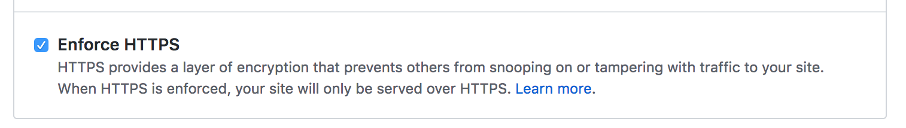

next主题
首先是关于博客主题。上周看到一个超级对眼的主题，next，赶紧将自己的博客主题替换成next了。它很简单，看起来也舒服，简单让我有了更多动力写博客。
https
letsencrypt
Chrome现在直接将HTTP网站标记为不安全，所以我的博客也不得不支持HTTPS。原本抱着简单省事的心态打算上阿里云自己买一个，发现价格居然高达几千。作为个人博客，当然没必要买这么贵的啦。
那就找免费的吧。Let’s encrypt是大家推荐得最多的免费SSL证书提供者。一方面是，很多第三方web托管服务支持Let’s encrypt，见这里，当然，其中包括我们熟知的Github Pages。我自己的博客也是直接放Github。另一方面，letsencrypt提供了非常便捷的自动化工具certbot来简化申请HTTPS证书的过程，降低使用门槛。letsencrypt有90天的使用期限，到期后必须续期才能继续使用，这一点稍显不便。不过，对于免费的东西我们要求也不能过高。
这里有几篇关于letsencrypt使用参考：
Github Pages
Github Pages一直在改进(不得不赞)。Github Pages在2009年时就开始支持自定义域名，2016年开始*.github.io域名开始支持HTTPS，2018年5月1日自定义域名也开始支持HTTPS。参考。
所以托管在Github博客想要支持HTTPS其实很简单。
首先，为你的站点勾选“Enforce HTTPS”

然后，更新A记录
185.199.108.153
185.199.109.153
185.199.110.153
185.199.111.153
两步即让你的博客支持HTTPS了，简单吧。据称，这几个新的IP不仅能让你的博客支持HTTPS，而且由于它们提供CDN功能，所以博客访问速度会变快。另外，还提供保护避免DDoS攻击。
mixed content的问题。现在你的博客由HTTP访问切换到HTTPS了，但博客中免不了可能有HTTP链接资源，如图片，CSS文件，Javascript文件等等。所以你的站点变成了mixed content站点，加载资源时可能失败导致页面解析问题。解决办法就是将HTTP链接修改成HTTPS链接。
优化
优化方法是使用gulp对各种资源进行压缩。
1 | hexo clean //清除public文件夹 |
_post 目录
所有已发布的文章都放在 _post 目录下。_post 目录下文件数会越来越多，导致编辑和查找变得困难。解决办法如下：
- 修改
_config.xml配置
1 | new_post_name: :year-:month-:day-:title.md # File name of new posts |
修改成
1 | new_post_name: :year/:month-:day-:title.md # File name of new posts |
- 将
_post目录下的文件移到_post/2019,_post/2018,_post/2017 - 将文件名中的年份去掉。
2019-05-22-a-blog.md改成05-22-a-blog.md
评论
gitment
2019-06-25 更新: gitment 不可用
主要参考 hexo加入gitment评论功能
- Github 注册 application，并获取 Client ID 和 Client Secret。注册地址
- Homepage URL 填域名
- Authorization callback URL 填域名
- Github 上创建一个新的公开 repo，用于存储评论数据
- Next 主题直接支持 gitment，配置即可
1 | # Gitment |
遇到以下错误：
1 | { |
gitalk
- 参考
- hexo next 主题配置 gitalk 评论后无法初始化创建 issue · Issue #115 · gitalk/gitalk
- 发布的新文章提示“未找到相关的 Issues 进行评论，请联系xxx初始化创建
- Hexo中Gitalk配置使用教程-可能是目前最详细的教程 | ioChen’s Blog
主要的坑在于中文文章名 url 编码过长导致调用 Github API 时出现 Error: Validation Failed，原因是 Github issue 不支持超过 50 个字符的 label。
出现错误时 Github API 的接口响应如下：
1 | { |
- 方案一 - 使用
md5()方法得到当前页面 url 的 MD5 - 方案二 - 截取标题前50个字符